വിിവേ�ചനത്തിിനെ�തിിരെെ
11
“ഈ കോsോടതിിമുുറിിയിിൽ തങ്ങിിനിിൽക്കുുന്ന വെള്ളമേ�ധാാവിത്വത്തിിന്റെെź അന്തരീീക്ഷംം എന്നെ�
അസ്വവസ്ഥനാാക്കുുന്നു. ഇതേ� മേ�ധാാവിത്വംം� എന്റെെź ജനങ്ങളിിൽ ഏല്പിിച്ച മനുുഷ്യയവിരുദ്ധമാായ
ദുുർനീതിികൾ എന്നെ� അസ്വവസ്ഥനാാക്കുുന്നു. ഈ രാാജ്യത്തെ� പാാർലമെെന്റ് കാാരണമാാണ്
ഞാാൻ വോോോട്ടവകാാശംം ഇല്ലാാത്തവനാായിിത്തീർന്നത് എന്ന് ഞാാൻ ഓർക്കുുന്നു. ഞങ്ങൾക്ക്
ഒരുതുണ്ട്് ഭൂൂമിയിില്ല. എന്നിട്ടും�ം ജനങ്ങൾ ദാാരിദ്ര്യം�ം കൊsൊണ്ട്് പൊ�ൊറുുതിിമുുട്ടുന്നിടത്തേ�ക്ക്്
നിിർബന്ധപൂർവം ഞങ്ങളെ�
പറഞ്ഞുു
വിടുന്നു. അനേ�ക വർഷങ്ങളാാ
യിി
ഈ രാാജ്യത്തെ� അനീതിികൾക്കുംം�
യാാതനക
ൾക്കുംം� കാാരണമാാകുന്ന
അതേ� വർണ്ണവിവേചനം നിിഷ്പക്ഷ
മാായ ഒരു വിചാാരണ എനിിക്ക്
ലഭ്യമാാക്കുുമെെന്ന്് എങ്ങനെ�
ഉറപ്പിിക്കാാൻ കഴിിയുംം�?”.
നെൽസൺ മണ്ടേĬലയുുടെെ
പ്രിിറ്റോǯോറിിയ വിിചാാരണ-
(1962)
ചിത്രംം 11.1
Page 54
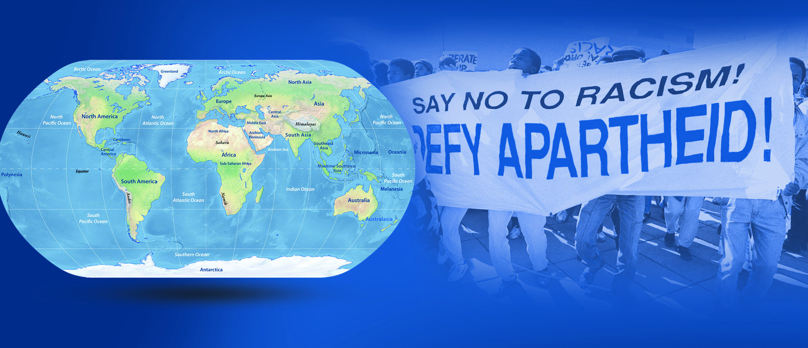

Page 55
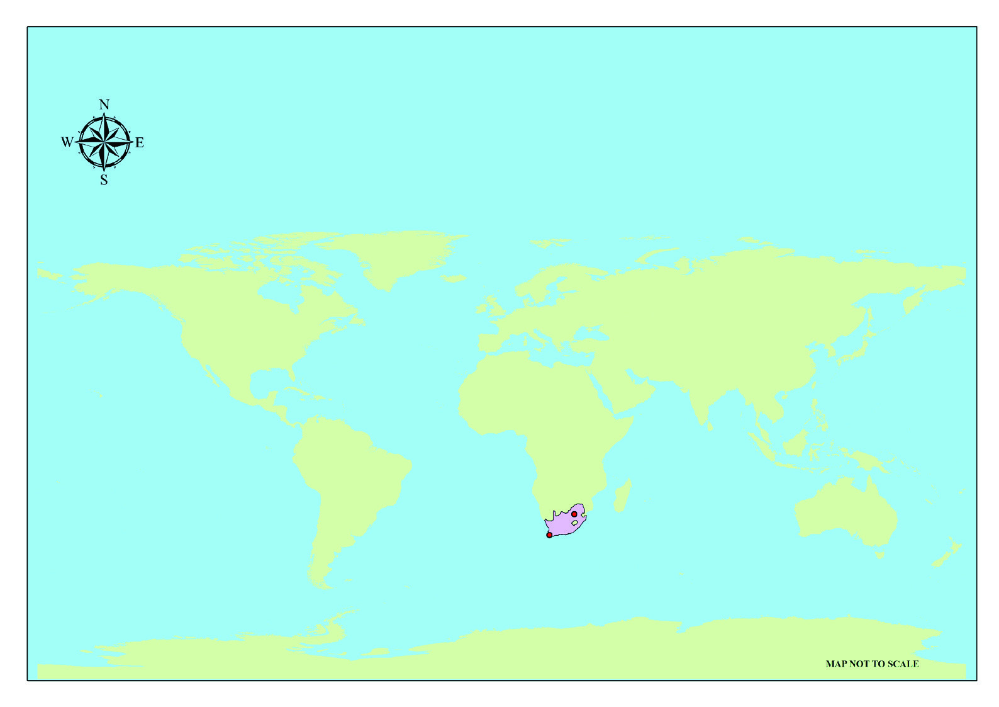
ദക്ഷിണാാഫ്രിിക്കയുുടെെ സ്വാാ�ത
ന്ത്യ്രരസമര
നാായകനാായ
നെ�ൽസൺ മണ്ടേ�ലയുടെെ വാാക്കുുക
ളാാണ് മുുകളിിൽ കൊsൊടുത്തിിരിക്കുുന്നത്.
ആരാാണ് ദക്ഷിണാാഫ്രിിക്കയിില് വർണ്ണവിവേചനം നടപ്പിിലാാക്കിയത്് ?
ഏതു സാാഹചര്യത്തിിലാാണ് നെ�ൽസൺ മണ്ടേ�ലയ്ക്ക്് ഇത്തരംം ഒരു വിചാാരണ നേ�രിിടേ�ണ്ടിി
വന്നത് ?
വർണ്ണത്തിിന്റെെź പേ�രിിൽ നൂറ്റാാണ്ടുുകളോ�ോളം അടിച്ചമർത്തൽ നേ�രിിട്ട ദക്ഷിണാാഫ്രിിക്കൻ
ജനതയുുടെെ മോ�ോചനത്തിിനാായിി പോ�ോരാാടിയ വ്യക്തിിയാാണ് നെ�ൽസൺ മണ്ടേ�ല. സ്വവന്തം
രാാജ്യത്തിിന്റെെźയുംം� ജനങ്ങളുുടെെയുംം� മോ�ോചനത്തിിനുവേണ്ടി പ്രവർത്തിിച്ചതിിന് അദ്ദേŔഹത്തിിന്
മൂന്ന് ദശാാബ്ദത്തോ�ോളം ജയിിൽവാാസമനുുഭവിിക്കേ�ണ്ടിവന്നു. ദക്ഷിണാാഫ്രിിക്കൻ ജനത നേ�രിിട്ട
വിവേചനത്തെ�യുംം� അടിച്ചമർത്തലിിനെ�യുംം� കുറിിച്ച് കൂടുതൽ വിവരങ്ങൾ അറിിയാാൻ ഈ
രാാജ്യത്തിിന്റെെź പ്രത്യേ�േകതകൾ നാം അറിിയേ�ണ്ടതുുണ്ട്്.
ദക്ഷിണാാഫ്രിിക്ക ഏതു വൻകരയിിലാാണ് സ്ഥിതിി ചെ�യ്യുുന്നത് എന്ന് ലോ�ോക ഭൂൂപടംം നോ�ോക്കി
കണ്ടെ�ത്തുുക.
ലോോക ഭൂൂപടംം
ആർട്ടിക് സമുുദ്രംം
അന്റാാർട്ടിക്ക
ശുഭപ്രതീക്ഷാാ മുുനമ്പ്്
ജോ�ോഹന്നാാസ്
്ബർഗ്്
വടക്കേ�
അമേ�രിിക്ക
പസ
ഫിിക്
സമുുദ്രംം
പസ
ഫിിക്
സമുുദ്രംം
അറ്റ്ലാാന്റിക്
സമുുദ്രംം
ആഫ്രിിക്ക
ഏഷ്യയ
യൂറോ�ോപ്പ്
ആസ്്ട്രേğലിയ
തെ�ക്കേ�
അമേ�രിിക്ക
ഇന്ത്യൻ
മഹാാസ
മുുദ്രംം
സൂചിക
പ്രധാാന സ്ഥലങ്ങൾ
ദക്ഷിണാാഫ്രിിക്ക
ഭൂൂഖണ്ഡങ്ങൾ
ചിത്രംം 11.2
ലോ�ോകഭൂൂപടം
അന്റാാർട്ടിക് സമുുദ്രംം
ദക്ഷിിണാാഫ്രിിക്ക: സ്ഥാാനം, ഭൂൂപ്രകൃതിി
ആഫ്രിിക്കൻ വൻകരയുുടെെ തെ�ക്കേ�യറ്റത്ത്
് ഇന്ത്യൻ മഹാാസ
മുുദ്രവുംം�
അറ്റ്ലാാന്റിക് സമുുദ്ര
വുമാായിി അതിിർത്തിി പങ്കിിടുന്ന രാാജ്യമാാണ് ദക്ഷിണാാഫ്രിിക്ക. വൈൈവിധ്യമാാർന്ന ഭൂൂപ്രകൃതിി
സവിിശേ�ഷതക
ൾ ദക്ഷിണാാഫ്രിിക്കയുുടെെ പ്രത്യേ�േകതയാാണ്. വിശാാലമാായ തീരപ്രദേ�ശങ്ങള്,
167
വിിവേ�ചനത്തിിനെ�തിിരെെ
Page 56
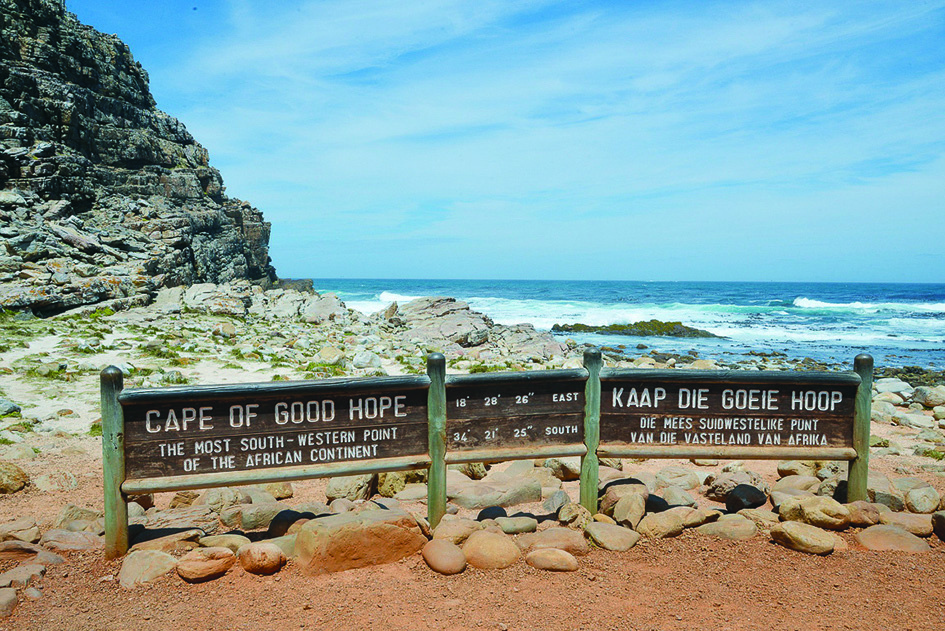


വിസ്തൃതമാായ
സമത
ലങ്ങളും�
ം പീഠഭൂൂമികളും�ം, ഉയർന്ന പർവതനിിരകൾ, വന്നദിികള്, വെള്ള
ച്ചാാട്ടങ്ങൾ, വരണ്ട മരുുപ്രദേ�ശംം തുടങ്ങിിയവ ഈ രാാജ്യത്തെ� വ്യത്യസ്തമാാക്കുുന്നു. ഉള്നാാടന്
കൃഷിഭൂൂമികളിിലുംം� ഖനിികളിിലുംം� നിിന്നുള്ള സമ്പത്ത്
്, കാാലാാവസ്ഥ, മനുുഷ്യയസമ്പത്ത്
് ഇവ
യൂറോ�ോപ്യരെെ ദക്ഷിണാാഫ്രിിക്കയിിലേ�ക്ക്് ആകർഷിച്ചു.
ഗ്ലോോøോബ്, അറ്റ് ലസ്് എന്നിവ നിിരീീക്ഷിച്ച് താാഴെെപ്പറയു
ുന്ന വിവരങ്ങൾ കണ്ടെ�ത്തുുക.
ഏതെ�ല്ലാം� അക്ഷാംംശ, രേ�ഖാംശ രേ�ഖകൾക്കിടയിിലാാണ് ദക്ഷിണാാഫ്രിിക്ക സ്ഥിതിി ചെ�യ്യുുന്നത്?
ദക്ഷിണാാഫ്രിിക്കയുുമാായിി അതിിർത്തിി പങ്കിിടുന്ന രാാജ്യങ്ങൾ ഏതെ�ല്ലാം�?
ശുുഭപ്രതീക്ഷാാ മുുനമ്പ്്
(Cape of Good Hope)
ആഫ്രിിക്കൻ വൻകരയുുടെെ
തെ�ക്കേ�യറ്റത്താായിി അറ്റ്ലാാന്റിക്
സമുുദ്രതീീരത്ത് സ്ഥിതിിചെ�യ്യുുന്ന ഭൂൂപ്രദേ�
ശമാാണ്
് ശുഭപ്രതീക്ഷാാ മുുനമ്പ്്. യൂറോ�ോ
പ്യർക്ക് അറ്റ്ലാാന്റിക് മഹാാസമുുദ്രത്തിിലൂടെെ
ആഫ്രിിക്കൻ വൻകരയെ� ചുറ്റി ഇന്ത്യൻ
മഹാാസ
മുുദ്രത്തിിൽ എത്തിിയാാലേ� ഏഷ്യാാ�
വൻകരയിിലെ� ഇന്ത്യയുൾപ്പെ�ടെെയുുള്ള രാാജ്യങ്ങളിിലേ�യ്ക്ക്് എത്താാൻ കഴിിയുമാായിിരു
ന്നുള്ളു. ഏഷ്യയയിിലേ�യ്ക്ക്് എത്താാനു
ുള്ള പ്രതീക്ഷ നൽകുന്നത് എന്ന അർഥത്തിിൽ ഇവിടം
‘ശുഭപ്രതീക്ഷാാ മുുനമ്പ്്’ എന്ന പേ�രിിൽ അറിിയപ്പെ�ടാാ
ൻ തുടങ്ങിി.
ചിത്രംം 11.3
ഡിിജിറ്റൽ മാാപ്പ് ഉപയോ�ോഗിച്ച് ആഫ്രിിക്കൻ വൻകരയിിൽ ദക്ഷിണാാഫ്രിിക്ക
യുടെെ സ്ഥാാനംം, തലസ്ഥാാനംം, പ്രധാാന നഗരങ്ങ
ള്, ചരിത്ര പ്രധാാന കേsന്ദ്ര
ങ്ങൾ എന്നിവ കണ്ടെ�ത്തുുക.
ദക്ഷിിണാാഫ്രിിക്ക
കോ�ോളനിവൽക്കരിക്കപ്പെെƀടുന്നുു
സാാൻ, ഖോ�ോസാാ തുടങ്ങിിയ ജനവിിഭാാഗങ്ങളാാ
യിിരുന്നു ദക്ഷിണാാഫ്രിിക്കയിിലെ� ആദിമനിിവാാ
സികൾ. ആഫ്രിിക്കയുുടെെ മറ്റു പ്രദേ�ശങ്ങളിിൽ
നിിന്ന് എത്തിിയ ഗോ�ോത്രവിഭാാഗക്കാാരാായിിരുന്നു
ആദ്യമാായിി ഇവിടേ�ക്ക്് കുടിയേ�റ്റംം നടത്തിിയത്്.
പതിിനഞ്ചാംം നൂറ്റാാണ്ടിിന്റെെź അവസാാനത്തോ�ോടെെ
യൂറോ�ോപ്യർ ദക്ഷിണാാഫ്രിിക്കയിിൽ എത്തിിത്തു
ടങ്ങിി. പതിിനേ�ഴാം� നൂറ്റാാണ്ടോ�ോടുകൂടി ദക്ഷിണാാ
കോ�ോളനിവൽക്കരണംം
ഒരു രാാജ്യം�ം മറ്റൊ�ൊരു
ു പ്രദേ�ശ
ത്തിി
ന്റെെźയുംം� അവിടുത്തെ� ജനങ്ങളുുടെെയുംം�
മേ�ൽ അധികാാരം സ്ഥാാപിിച്ച് രാാഷ്ട്രീീ
യവുംം� സാാമൂൂഹികവുംം� സാാമ്പത്തിിക
വുംം� സാംസ്കാാരിികവുമാായ നിിയന്ത്ര്രണ
ത്തിിൽ കൊsൊണ്ടുുവരുുന്നതിിനെ�യാാണ്്
കോsോളനിിവൽക്കരണം
ം എന്നുപറയു
ു
ന്നത്.
168
സാാമൂൂഹ്യയശാാസ്ത്രംം
- ഭാാഗംം 2
VII
Page 57
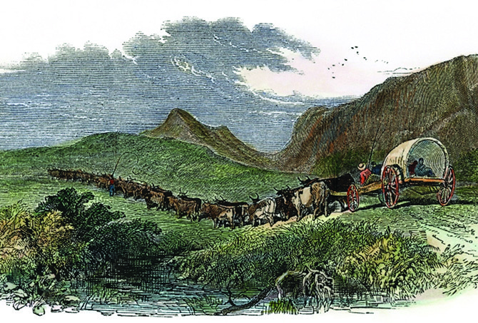
ഫ്രിിക്കയിില് ഡച്ച് സ്വാാ�ധീീനം ശക്തമാാകു
ുകയുംം� കേsപ്പ് ടൗൺ എന്ന പ്രദേ�ശംം അവരുുടെെ
പ്രധാാന കോsോളനിിയാായിി മാാറുകയുംം� ചെ�യ്തുു.
പതിിനെ�ട്ടാം� നൂറ്റാാണ്ടോ�ോടെെ ബ്രിിട്ടീഷുകാാർ ദക്ഷിണാാഫ്രിിക്കയിിലെ�ത്തിിച്ചേ�ർന്നു. ലോ�ോക
ത്തിിന്റെെź വിവിധ ഭാാഗങ്ങളിിൽ കൂടുതൽ ഭൂൂപ്രദേ�ശങ്ങൾ സ്വവന്തമാാക്കുുക, ആഫ്രിിക്കൻ വൻകര
യിിലെ� അളവറ്റ സമ്പത്ത്
് കൈൈക്കലാാക്കുുക, മറ്റ് യൂറോ�ോപ്യൻ രാാജ്യങ്ങൾക്കുുമേ�ൽ അധീശത്വംം�
സ്ഥാാപിിക്കുുക, ഏഷ്യാാ�വ
ൻകരയിിലേ�ക്കുുള്ള സഞ്ചാാര
ത്തിിന് ഇടത്താാവളമാാ
ക്കുുക തുടങ്ങിിയ
ലക്ഷ്യങ്ങളോ�
ോടെെയാാണ് ബ്രിിട്ടൻ ദക്ഷിണാാഫ്രിിക്കയെ�
കോsോളനിിയാാക്കാാൻ ശ്രമിച്ചത്.
ഗ്രേേ÷റ്റ്് ട്രെെğക്ക് (Great Trek)
ബൂൂവറുുകൾ (Boers)
യൂറോ�ോപ്പിിൽ നിിന്ന് ആദ്യം�ം ദക്ഷിണാാഫ്രിിക്കയിിലെ�ത്തിിയ നെ�തർലന്റ് (ഡച്ച്),
ഫ്രാാൻസ്്, ജർമ്മനിി തുടങ്ങിിയ രാാജ്യക്കാാരു
ുടെെ പിന്മുുറക്കാാരാാണ്
് ബൂവറുുകൾ.
കൃഷിക്കാാര
ൻ എന്നാാണ്
് ബൂവർ എന്ന ഡച്ച് പദത്തിിന്റെെź അർഥം. പിൽക്കാാ
ലത്ത് ഈ ജനവിിഭാാഗങ്ങൾ ആഫ്രിിക്കാാന
ർ (Afrikaner) എന്നുംം� ഇവരുുടെെ ഭാാഷയുംം�
സംസ്കാാരവുംം� ആഫ്രിിക്കാാൻസ്് (Afrikaans) എന്നുംം� അറിിയപ്പെ�ട്ടു.
ബ്രിിട്ടൻ നടപ്പിിലാാക്കിയ കോsോളനിിവൽക്കരണ പദ്ധതിികൾ ബൂവർമാാരെെ എങ്ങനെ�
ബാാധിച്ചു
വെന്ന് നോ�ോക്കാം.
ഡച്ചുകാാരിൽ നിിന്ന് കേsപ്പ് കോsോളനിി
പിടിച്ചെ�ടുത്ത ബ്രിിട്ടൻ ആ പ്രദേ�ശ
ത്ത് ചില നയങ്ങ
ൾ നടപ്പിിലാാക്കി.
ഡച്ചുഭാാഷ
യ്ക്ക്് ഉപരോ�ോധമേ�ർപ്പെ�
ടുത്തിി. ഇംഗ്ലീഷ്്, കേsപ്പ് കോsോളനിി
യിിലെ� ഏക ഭാാഷയാാക്കി.
പത്തൊ�ൊമ്പതാംം നൂറ്റാാണ്ടിിന്റെെź പകുു
തിിയോ�ോടെെ ബ്രിിട്ടൻ, തങ്ങളുുടെെ
കോsോളനിികളിിൽ അടിമത്തം നിിരോ�ോ
ധിച്ചു. അടിമകളെ� പ്രയോ�ോജനപ്പെ�
ടുത്തിി കൃഷി നടത്തിിയിിരുന്ന ബൂവറുു
കളെ� ഇത് പ്രതിികൂലമാായിി ബാാധിച്ചു.
ബ്രിിട്ടൻ നടപ്പിിലാാക്കിയ ഇത്തരംം നയങ്ങ
ളിിൽ നിിന്ന് രക്ഷപ്പെ�ടാാ
ൻ കേsപ്പ് കോsോളനിിയിിൽ
നിിന്ന് ദക്ഷിണാാഫ്രിിക്കയുുടെെ ഉൾപ്രദേ�ശങ്ങളിിലേ�ക്ക്് ബൂവറുുകൾ നടത്തിിയ പലാായനമാാണ്
്
ഗ്രേ÷റ്റ് ട്രെെğക്ക് എന്നറിിയപ്പെ�ടുുന്നത്.
ഗ്രേ÷റ്റ് ട്രെെğക്കിനെ�ത്തുുടർന്ന് ബൂവറുുകൾ ട്രാാൻസ്്വാാൾ, ഓറഞ്ച് ഫ്രീ സ്റ്റേǢറ്റ്, നേ�റ്റാാൽ എന്നി
വിടങ്ങളിിൽ റിിപ്പബ്ലിിക്കുുകൾ സ്ഥാാപിിച്ചു.
ചിത്രംം 11.4
ഗ്രേേ÷റ്റ് ട്രെെğക്ക്്
169
വിിവേ�ചനത്തിിനെ�തിിരെെ
Page 58
ബൂൂവർ യുുദ്ധങ്ങൾ
ദക്ഷിണാാഫ്രിിക്കയുുടെെ ചരിത്രം തിിരുത്തിിയ ബൂവർ യുദ്ധങ്ങൾക്ക് കാാരണമാായ സാാഹചര്യ
ങ്ങൾ എന്തൊ�ൊക്കെ�യാാണെ�ന്ന്് നോ�ോക്കാം.
പത്തൊ�ൊമ്പതാംം നൂറ്റാാണ്ടിിന്റെെź അവസാാനത്തോ�ോടെെ ബൂവർ റിിപ്പബ്ലിിക്കിന്റെെź അധീനപ്രദേ�ശ
ങ്ങളിിൽ സ്വവർണ്ണത്തിിന്റെെźയുംം� വജ്രത്തിിന്റെെźയുംം� ഖനിികൾ കണ്ടുുപിടിക്കപ്പെ�ട്ടുു. ഇതോ�ോടെെ
ലോ�ോകത്തിിലെ� ഏറ്റവുംം� പ്രധാാന സ്വവർണ്ണ, വജ്ര ഉൽപാാദകരാായിി ദക്ഷിണാാഫ്രിിക്ക മാാറിി.
ബൂവർ റിിപ്പബ്ലിിക്കുുകളെ� ബ്രിിട്ടീഷ്് കോsോളനിി പ്രദേ�ശങ്ങളോ�
ോടൊ�ൊപ്പംം കൂട്ടിച്ചേ�ർക്കാാൻ ബ്രിിട്ടൻ
ശ്രമിച്ചതോ�ോടെെയാാണ് ബൂവർ യുദ്ധങ്ങൾ ആരംഭിച്ചത്.
ഒന്നാം ബൂൂവർ യുുദ്ധം
കൂടുതൽ പ്രദേ�ശങ്ങളിിലേ�ക്ക്് ബ്രിിട്ടീഷ്്ഭരണം
ം വ്യാാ�പിപ്പിിക്കുുക എന്ന ലക്ഷ്യത്തോ�ോടെെ
ബ്രിിട്ടൻ ബൂവറുുകളിിൽ നിിന്നുംം� ട്രാാൻസ്്വാാൾ പിടിച്ചെ�ടുത്തു. ഇതോ�ോടെെ ഒന്നാം ബൂവർ യുദ്ധം
(1880-81) ആരംഭിച്ചു. ഈ യുദ്ധത്തിിൽ ബൂവറുുകൾ വിജയിിക്കുുകയുംം� ട്രാാൻസ്്വാാളും�ം സമീീപ
പ്രദേ�ശങ്ങളും�ം കൂട്ടിച്ചേ�ർത്ത് ദക്ഷിണാാഫ്രിിക്കൻ റിിപ്പബ്ലിിക്ക് രൂപീകരിിക്കുുകയുംം� ചെ�യ്തുു.
രണ്ടാംം ബൂൂവർ യുുദ്ധം
സ്വവർണ്ണഖനിികളിിൽ നിിന്നുള്ള സമ്പത്തുംം� അവയുുടെെ നിിയന്ത്ര്രണവുംം� സംബന്ധിച്ച തർക്കങ്ങ
ളാാണ് രണ്ടാം ബൂവർ യുദ്ധത്തിിലേ�ക്ക്് നയിിച്ചത്. ബൂവർ ഭരണാാധിികാാരികൾ ഖനിികൾക്ക്
നിികുതിി ഏർപ്പെ�ടുുത്തിി. ഖനിികളിിലെ� ബ്രിിട്ടീഷുകാാരാായ തൊ�ൊഴിിലാാളിികൾക്ക് ബ്രിിട്ടൻ വോോോട്ട
വകാാശംം ആവശ്യപ്പെ�ട്ടുു. റിിപ്പബ്ലിിക്കൻ ഭരണാാധിികാാരികൾ ഈ ആവശ്യംം� നിിരസി
ിച്ചതോ�ോടെെ
ദക്ഷിണാാഫ്രിിക്കയിിലെ� ഏറ്റവുംം� വിനാാശകരമാായ
സാായുുധപോ�ോരാാട്ടമാായ രണ്ടാം ബൂവർ
യുദ്ധം (1899-1902) ആരംഭിച്ചു.
ഈ യുദ്ധത്തിിൽ ബ്രിിട്ടീഷ്്സൈൈന്യംം� ബൂവർ
റിിപ്പബ്ലിിക്കുുകളെ� പരാാജയപ്പെ�ടുുത്തിി.
വെരിനിിഗിംം�ഗ്് സന്ധിയനുുസരിിച്ച് ബൂവറുു
കൾ ബ്രിിട്ടന്റെെź പരമാാധി
ികാാരം അംഗീകരിിച്ചു.
ബ്രിിട്ടന്റെെź നിിയന്ത്ര്രണത്തിിലുള്ള സ്വവയംഭരണ
പ്രദേ�ശംം എന്ന നിിലയിിൽ യൂണിയൻ ഓഫ്
സൗൗത്ത് ആഫ്രിിക്ക രൂപീകരിിച്ചു. യൂണിയൻ
ഓഫ് സൗൗത്ത് ആഫ്രിിക്കയിിൽ നടപ്പിിലാാക്കിയ
ഭരണഘടനയനുുസരിിച്ച് ബ്രിിട്ടീഷുകാാർക്കുംം�
ആഫ്രിിക്കാാന
ർമാാർക്കുംം� ഉയർന്ന പരിിഗണന
ലഭിച്ചു. കറുുത്തവർഗക്കാാരുുടെെ അടിസ്ഥാാന
അവകാാശങ്ങൾ നിിഷേ�ധിിക്കപ്പെ�ട്ടുു.
ചിത്രംം 11.5
രണ്ടാം ബൂൂവർ യുുദ്ധംം
170
സാാമൂൂഹ്യയശാാസ്ത്രംം
- ഭാാഗംം 2
VII
Page 59

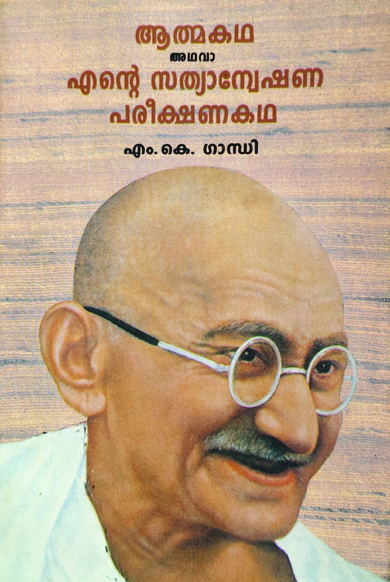

ബൂവർ യുദ്ധങ്ങൾക്ക് ദക്ഷിണാാഫ്രിിക്കയുുടെെ ചരിത്രത്തിിൽ ഉള്ള പ്രാാധാാന്യ
ത്തെ�ക്കുുറിിച്ച് ആശയപടം
ം തയ്യാാറാാക്കുുക.
മഹാാത്മാാഗാാന്ധിി ദക്ഷിിണാാഫ്രിിക്കയിൽ
...മറ്റൊ�ൊരു
ു ഉദ്യോ�ോ�ഗസ്ഥൻ എന്റെെź അടുത്തുവന്ന് പറഞ്ഞുു: “വരൂൂ, നിിങ്ങൾ
മുുന്നിലെ� കമ്പാാർട്ട്മെെന്റിലേ�ക്ക്് പോ�ോകണം”.
“പക്ഷേ� എനിിക്ക് ഒന്നാം ക്ലാാസ്് ടിക്കറ്റ്് ഉണ്ടല്ലോ�ോ” ഞാാൻ പറഞ്ഞുു.
“അതിിൽ കാാര്യമില്ല. നിിങ്ങൾ തീർച്ചയാായുംം� ഇതിിന്റെെź മുുന്നിലെ� കമ്പാാർ
ട്ട്മെെന്റിലേ�ക്ക്് പോ�ോകണമെെന്ന്് ഞാാൻ പറയുുന്നു” അയാാൾ പ്രതിികരിിച്ചു.
“ഡർബാാനിിൽ വെച്ച് ഈ കമ്പാാർട്ട്മെെന്റിൽ യാാത്രചെ�യ്യാാൻ എന്നെ�
അനുവദിിച്ചതാാണെ�ന്നുംം� ഇതിിൽ തന്നെ� എനിിക്ക് പോ�ോകണമെെന്നുംം�
ഞാാൻ നിിങ്ങളോ�
ോട് പറയുുന്നു”. “സാാധ്യമല്ല. നിിങ്ങൾക്കതിിൽ പോ�ോകാാനാാ
വില്ല. നിിങ്ങൾ ഈ കമ്പാാർട്ട്മെെന്റിൽ നിിന്ന് പോ�ോകണം. അല്ലാാത്തപക്ഷംം
നിിങ്ങളെ�
പുറത്തേ�യ്ക്കെ�റിിയാാൻ വേണ്ടി എനിിക്കൊ�ൊരുു പോ�ോലീസ്് കോsോൺ
സ്റ്റബിളിിനെ� വിളിിക്കേ�ണ്ടിവരും�ം” എന്ന് ആ ഉദ്യോ�ോ�ഗസ്ഥൻ പറഞ്ഞുു.
“ശരിി. നിിങ്ങൾക്കങ്ങനെ�
ചെ�യ്യാം. ഞാാൻ സ്വവമേ�ധയാാ പുറത്തു പോ�ോകാാൻ
വിസമ്മതിിക്കുുന്നു”. പോ�ോലീസുകാാരൻ വന്നു. അയാാൾ കൈൈക്കുുപിടിച്ച് എന്നെ� പുറത്തേ�ക്കുു
തള്ളി. എന്റെെź സാാധനങ്ങളും�
ം പുറത്തേ�ക്കെ�
റിിഞ്ഞുു... വൈൈകിട്ടത്തെ� തീവണ്ടിി വന്നു. അതിിൽ എനിി
ക്കാായിി സംവരണംം ചെ�യ്യപ്പെ�ട്ട ഒരു ബർത്ത് ഉണ്ടാായിിരുന്നു. ഡർബാാനിിൽ വെച്ച് ഞാാൻ നിിരസി
ിച്ച
കിടക്കയ്ക്കുള്ള ടിക്കറ്റ്് ഇപ്പോ�ോൾ മാാരിട്സ്് ബർഗിൽ ഞാാൻ വാാങ്ങിി.
എം കെെs ഗാാന്ധി-‘ആത്മകഥ അഥവാാ എന്റെെź സത്യാാ�ന്വേേേഷണ പരീക്ഷണകഥ’
ദക്ഷിണാാഫ്രിിക്കയിിൽ നിിലനിിന്നിരുന്ന സാാമൂൂഹ്യാാ�വസ്ഥയാാണ് ഗാാന്ധിജി തന്റെെź ആത്മകഥ
യിിൽ വിവരിിക്കുുന്നത്.
മഹാാത്മാാഗാാന്ധി 1893-ലാാണ് ദക്ഷിണാാഫ്രിിക്കയിിൽ എത്തിിയത്്. അപ്രഖ്യാാ�പിത വർണ്ണ
വിവേചനത്തിിന്റെെź കാാലമാായിിരുന്നു അത്. ഗാാന്ധിജി ദക്ഷിണാാഫ്രിിക്കയിിൽ ആരംഭിച്ച ‘ഇന്ത്യൻ
ഒപ്പീനിിയൻ’ എന്ന പത്രത്തിിൽ കൊsൊളോ�ോണിയൽ ഭരണകൂടം ആഫ്രിിക്കക്കാാരോ�
ോട് കാാണി
ക്കുുന്ന വിവേചനത്തെ�ക്കുുറിിച്ച് ഇപ്രകാാരം എഴുതിി; ‘ആഫ്രിിക്കക്കാാർ മാാത്രമാാണ് ഭൂൂമിയിിലെ�
ആദിമനിിവാാസിികൾ. വെള്ളക്കാാരാാകട്ടെെ, ആ ഭൂൂമി ബലപ്രയോ�ോഗത്തിിലൂടെെ കൈൈവശപ്പെ�ടുു
ത്തുകയുംം� തങ്ങളുുടെെ അധീനതയിിലാാക്കുുകയുംം� ചെ�യ്തുു’.
രണ്ടാം ബൂവർ യുദ്ധകാാലത്ത് യുദ്ധക്കെ�ടുുതിികളിിൽ ദുുരിതമനുുഭവിിക്കുുന്നവർക്ക് സഹാായ
മെെത്തിിക്കുുന്ന സന്നദ്ധപ്രവർത്തനങ്ങ
ളിിൽ അദ്ദേŔഹം പങ്കെ�ടുുത്തിിരുന്നു. സത്യയഗ്രഹം, നിിസ്സഹ
കരണംം, നിിയമലംംഘനം തുടങ്ങിിയ സമര
രീീതിികൾ ഗാാന്ധിജി പരീീക്ഷിച്ചത് ഇവിടെെയാായിിരു
ന്നു. ‘ഗാാന്ധിജിയുടെെ രാാഷ്ട്രീീയപരീീക്ഷണശാാല’ എന്നാാണ്
് ദക്ഷിണാാഫ്രിിക്ക അറിിയപ്പെ�ടുുന്നത്.
ദക്ഷിണാാഫ്രിിക്കയിിൽ നിിലനിിന്നിരുന്ന വിവേചനത്തെ�ക്കുുറിിച്ചുള്ള ഗാാന്ധിജി
യുടെെ അഭിപ്രാായവുംം� അദ്ദേŔഹത്തിിന്റെെź സമര
രീീതിികളും�ം ഉൾപ്പെ�ടുുത്തിി ഒരു
വിശകലന കുറിിപ്പ് തയ്യാാറാാക്കുുക.
171
വിിവേ�ചനത്തിിനെ�തിിരെെ
Page 60
ആഫ്രിിക്കൻ നാാഷണൽ കോ�ോൺഗ്രസിിന്റെെź രൂപീകരണംം
ദക്ഷിണാാഫ്രിിക്ക ബ്രിിട്ടന്റെെź നിിയന്ത്ര്രണത്തിിലുള്ള സ്വവയംഭരണ പ്രദേ�ശമാായ
തിിനുശേ�ഷംം നടന്ന
ആദ്യ തിിരഞ്ഞെ�ടുുപ്പിിൽ വെള്ളക്കാാരാാ
ൽ നയിിക്കപ്പെ�ട്ട ദക്ഷിണാാഫ്രിിക്കൻ പാാർട്ടി അധികാാര
ത്തിിലെ�ത്തിി. പാാർപ്പിിടം, ഭരണം
ം, വ്യവസാായംം തുടങ്ങിിയ മേ�ഖലകളിിൽ ജനങ്ങളെ�
ബാാധിക്കുുന്ന
നിിയമങ്ങ
ൾ കൊsൊണ്ടുുവന്നു. കറുുത്തവരും�ം വെളുത്തവരും�ം എന്ന വംശീയ വേർതിിരിവ് ശക്ത
മാായിി. ജനങ്ങൾക്ക് സഞ്ചാാരസ്വാാ�തന്ത്ര്യവുംം�, വിദ്യാ�ാഭ്യാ�ാസത്തിിനുള്ള അവകാാശവുംം� നിിഷേ�ധിിച്ചു.
ഈ നയങ്ങ
ളിിൽ പ്രതിിഷേ�ധിിച്ച് ആഫ്രിിക്കൻ ജനതയുുടെെ അവകാാശസംംരക്ഷണത്തിിനാായിി
രൂപീകരിിച്ച സൗൗത്ത് ആഫ്രിിക്കൻ നേ�റ്റീീവ് നാാഷ
ണൽ കോsോൺഗ്രസ് എന്ന സംഘടനയാാണ്
്
പിൽക്കാാലത്ത് ആഫ്രിിക്കൻ നാാഷ
ണൽ കോsോൺഗ്രസ് എന്നറിിയപ്പെ�ട്ടത്. വിവേചനരഹി
ിത
ദക്ഷിണാാഫ്രിിക്ക പടുുത്തുയർത്തുന്നതിിന് ആഫ്രിിക്കൻ നാാഷ
ണൽ കോsോൺഗ്രസ് നേ�താാക്കൾ
പല സമരമാാ
ർഗങ്ങളും�ം ആവിഷ്്കരിിച്ചു.
ദക്ഷിണാാഫ്രിിക്കയിിൽ അധികാാരത്തിിലിരുന്ന വിവിധ ഗവൺമെെന്റുകൾ നടപ്പിിലാാക്കിയ
അടിച്ചമർത്തൽ നിിയമങ്ങളും�
ം അവയുുടെെ ഫലങ്ങളും�ം എന്തെ�ല്ലാാമാായിിരുന്നുവെന്ന് നോ�ോക്കാം.
നിയമങ്ങൾ
ഫലങ്ങൾ
ഖനിി-തൊ�ൊഴിിൽ നിിയമംം
(The Mines and Works Regulations Act)
വൈൈദഗ്്ധ്യംം� ആവശ്യമുുള്ള തൊ�ൊഴിിലുകൾ
വെളുത്ത വർഗക്കാാർക്ക് മാാത്രമാായിി സംവരണംം
ചെ�യ്തുു.
പ്രാാദേ�ശിിക ഭൂൂനിിയമംം
(Natives Land Act)
കറുുത്തവർക്ക് ‘റിിസർവുകൾ’ എന്ന പേ�രിിൽ
നീക്കിവച്ച പ്രത്യേ�േക പ്രദേ�ശങ്ങളിിൽ അല്ലാാതെ�
മറ്റിടങ്ങളിിൽ നിിന്നുംം� ഭൂൂമി വാാങ്ങാാൻ അവകാാശമിില്ല
പ്രാാദേ�ശിിക നഗര
പ്രദേ�ശ നിിയമംം
(The Natives [Urban Areas] Act)
കറുുത്ത വർഗക്കാാർക്ക് നഗരങ്ങ
ളിിലേ�ക്ക്് പ്രവേ
ശിക്കാാൻ നിിയന്ത്രണം
ം ഏർപ്പെ�ടുുത്തിി.
വോോോട്ടർമാാരുടെെ പ്രത്യേ�േക പ്രാാതിിനിിധ്യനിിയമംം
(Separate Representation of Voters Act)
കറുുത്ത വർഗക്കാാരെെ പൊ�ൊതുു വോോോട്ടർപട്ടിക
യിിൽ നിിന്ന് നീക്കം ചെ�യ്തുു.
നെ�ൽസൺ മണ്ടേ�ല
1918 ജൂലൈൈ 18-ന് ദക്ഷിണാാഫ്രിിക്കയിിലെ� ട്രാാൻസ്കി പ്രവിശ്യയിിലെ� തെം�ംബു രാാജകുടും�ംബ
ത്തിിലാാണ് നെ�ൽസൺ മണ്ടേ�ല ജനിിച്ചത്. രോ�ോലിഹ്ലാാഹ് ല എന്നാായിിരുന്നു അദ്ദേŔഹത്തിിന്റെെź
പേ�ര്്. പിതാാവ്, മാാഡിിബ വംശത്തിിന്റെെź തലവനാായിിരുന്ന ഗാാഡ് ല ഹെ�ൻട്രി മണ്ടേ�ലയുംം�
മാാതാാവ്, നോ�ോസ്്കെെsനിി ഫാാന്നിയുമാാണ്. പ്രാാഥമിക വിദ്യാ�ാഭ്യാ�ാസത്തിിനുശേ�ഷംം അദ്ദേŔഹം
ദക്ഷിണാാഫ്രിിക്കൻ ഗോ�ോത്രപാാരമ്പര്യം�ം, സംസ്കാാരംം എന്നിവയിിൽ പഠനം നടത്തുകയുംം� പിന്നീട്
അഭിഭാാഷക ബിരുദം നേ�ടുുകയുംം� ചെ�യ്തുു.
172
സാാമൂൂഹ്യയശാാസ്ത്രംം
- ഭാാഗംം 2
VII
Page 61
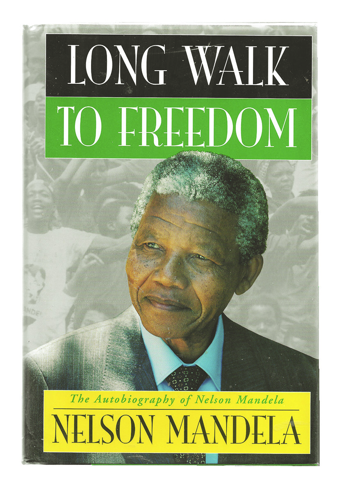
ചിത്രംം 11.7
“എന്റെെź കുടും�ംബത്തിിൽ ആരും�ം ഇതുവരെെ
സ്കൂൂളിിൽ പോ�ോയിട്ടിില്ല... സ്കൂൂളിിലെ� ആദ്യയ
ദിവസം
ം എന്റെെź ടീച്ചർ മിസ് എംഡിിൻഗേേuൻ
(Miss Mdingane) ഞങ്ങൾക്ക്് ഓരോ�ോരുത്തർ
ക്കുംം� ഒരു ഇംഗ്ലീീഷ് പേ�ര്് നൽകി. അക്കാാലത്ത്
ആഫ്രിിക്കക്കാാരു
ുടെെ ഇടയിിൽ ഇത്് പതിവാാ
യിരുന്നുു. ഇത്് നമ്മുുടെെ വിിദ്യാ�ാഭ്യാ�ാസത്തിിന്റെെź
ബ്രിിട്ടീഷ് പക്ഷപാാതിത്വംം� കാാരണമാായിരുന്നുു.
അന്ന്, മിസ് എംഡിിൻഗേേuൻ എന്നോ�ോട് പറഞ്ഞുു,
എന്റെെź പുതിയ പേ�ര്് നെൽസൺ എന്നാാണ്
്.
എന്തുുകൊ�ൊണ്ടാാണ് ഈ പ്രത്യേ�േ
ക പേ�ര്്,
എനിക്കറിിയില്ല.”
നെൽസൺ മണ്ടേĬല - ലോം�ംഗ് വാാക്ക്് ടു ഫ്രീഡം, 1994.
“ദക്ഷിണാാഫ്രിിക്കയിിലെ� ഒരു ആഫ്രിി
ക്കൻ കുട്ടിി ആഫ്രിിക്കക്കാാർക്ക്് മാാത്ര
മുള്ള ആശുുപത്രിയിൽ ജനിക്കു
ന്നുു......അവൻ വലുുതാാകു
ുമ്പോƠോൾ
ആഫ്രിിക്കക്കാാരൻ്റെെź മാാത്രംം ജോ�ോലികൾ
ചെ�യ്യാാനുംം�, ആഫ്രിിക്കൻ ടൗൺഷി
പ്പിിൽ മാാത്രംം ഒരു വീട് വാാടകയ്ക്കെ�
ടുക്കാാനുംം�, ആഫ്രിിക്കന്റെെź മാാത്രംം
ട്രെെğയിനുകളിിൽ യാാത്ര ചെ�യ്യാാനുംം�
നിർബന്ധിിക്കപ്പെ�ടുുന്നുു. രാാത്രിയോ�ോ
പകലോ�ോ വ്യയത്യാാ�സമില്ലാാതെ� ഏത്്
സമയത്തുംം� തടഞ്ഞുു നിർത്തിി ‘പാാസ്’
ഹാാജരാാക്കാാൻ അവനോോട് ഉത്തരവിിടു
ന്നുു, അതില്ലാാത്തപക്ഷം അറസ്റ്റ്് ചെ�യ്ത്്
ജയിലിൽ എറിിയുുന്നുു. അവൻ്റെെź വളർ
ച്ചയെ� തളർത്തുകയുംം� അവൻ്റെെź കഴിി
വുകളെ� കെ�ടുത്തുകയുംം� അവൻ്റെെź
ജീവിിതത്തെ�
മുരടിപ്പിിക്കുകയുംം�
ചെ�യ്യുുന്ന ക്രൂൂരമാായ വംശീയ നിയമ
ങ്ങളും�ം ചട്ടങ്ങളും�ം അവൻ്റെെź ജീവിിത
ത്തെ� ചുറ്റിയിരിക്കുന്നുു.”
നെൽസൺ മണ്ടേĬല -
ലോം�ംഗ് വാാക്ക്് ടു ഫ്രീഡം, 1994.
ദക്ഷിണാാഫ്രിിക്കൻ ജനത അഭിമുുഖീകരിിക്കേ�ണ്ടിവന്ന ജീവിതാാവസ്ഥകളെ�ക്കുുറിിച്ച് നെ�ൽ
സൺ മണ്ടേ�ല നടത്തിിയ പരാാമ
ർശങ്ങൾ വാായിിച്ചല്ലോ�ോ.
മാാതാാപിതാാക്കൾ നൽകിയ പേ�രിിന് പകരംം നെ�ൽസൺ മണ്ടേ�ലക്ക് ടീച്ചർ പുതിിയ പേ�ര്്
നൽകാാൻ കാാരണമെെന്താായിിരിക്കുംം�?
173
വിിവേ�ചനത്തിിനെ�തിിരെെ
Page 62


ദക്ഷിണാാഫ്രിിക്കയിിലെ� ജനങ്ങൾ എന്തെ�ല്ലാം� അടിച്ചമർത്തലുുകളാാണ് നേ�രിിട്ടിരുന്നത്?
കോsോളനിിവൽക്കരണത്തിിൽ നിിന്നുംം� വർണ്ണവിവേചനത്തിിൽ നിിന്നുംം� തദ്ദേŔശീയ ജനതയെ�
മോ�ോചിപ്പിിക്കേ�ണ്ടതിിന്റെെź ആവശ്യകത ബോ�ോധ്യപ്പെ�ട്ട നെ�ൽസൺ മണ്ടേ�ല, തന്റെെź നാാടിന്റെെźയുംം�
ജനങ്ങളുുടെെയുംം� വിമോ�ോചനത്തിിനാായിി അക്ഷീണം പ്രയത്നിിച്ചു.
ദക്ഷിണാാഫ്രിിക്കയിിൽ നടപ്പിിലാാക്കിയിിരുന്ന നിിയമങ്ങ
ൾ, നെ�ൽസൺ മണ്ടേ�ല
യുടെെ പരാാമ
ർശങ്ങൾ ഇവയുുടെെ അടിസ്ഥാാന
ത്തിിൽ കറുുത്ത വർഗക്കാാർ അഭി
മുുഖീകരിിക്കേ�ണ്ടിവന്ന ജീവിതാാവസ്ഥയെ�ക്കുുറിിച്ച് ചർച്ച സംഘടിപ്പിിക്കുുക.
നെ�ൽസൺ മണ്ടേ�ല യുവജനങ്ങളെ�
അണിനിിരത്തിി ആഫ്രിിക്കൻ നാാഷ
ണൽ കോsോൺഗ്രസ്
യൂത്ത് ലീഗ്് എന്ന യുവജന സംഘടന രൂപീകരിിക്കുുകയുംം� ആഫ്രിിക്കൻ നാാഷ
ണൽ കോsോൺ
ഗ്രസിൽ അംഗത്വമെെടുുക്കുുകയുംം� ചെ�യ്തുു.
വാാൾട്ടർ സിസിലു, ഒലിവർ താംബോ�ോ, ഡെ�സ്്മണ്ട്് ടുട്ടു തുടങ്ങിിയവരാായിിരുന്നു മണ്ടേ�ല
യോ�ോടൊ�ൊപ്പംം പ്രവർത്തിിച്ചിരുന്ന മറ്റ് പ്രധാാന നേ�താാക്കൾ.
ചിത്രംം 11.8
വാാൾട്ടർ സിസിലു
ചിത്രംം 11.9
ഒലിവർ താംബോ�ോ
ചിത്രംം 11.10
ഡെ�സ്്മണ്ട്് ടുട്ടു
വർണ്ണവിിവേ�ചനം (Apartheid)
കറുുത്ത വർഗക്കാാർക്കെ�തിിരെെ വംശീയമാായുംം� സാാമ്പത്തിികമാായുംം� ഏർപ്പെ�ടുുത്തിിയ വേർതിി
രിക്കലിിന്റെെź സാാമൂൂഹ്യക്രമമാാണ്
് വർണ്ണവിവേചനം. ദക്ഷിണാാഫ്രിിക്കയിിലെ� ഇതര ജനവിിഭാാ
ഗങ്ങളിിൽ നിിന്ന് വെളുത്ത വർഗക്കാാർക്ക് ഉയർന്ന പരിിഗണന ഇതുമൂലം ഉറപ്പാാക്കപ്പെ�ട്ടുു.
1948-ൽ അധികാാരത്തിിൽ വന്ന നാാഷ
ണൽ പാാർട്ടി, വേർതിിരിവുംം� വിവേചനവുംം� നിിയമംം
മൂലം നടപ്പിിലാാക്കിക്കൊ�ൊണ്ട്് വർണ്ണവിവേചനം നിിയമാാനുുസൃതമാാക്കി. വർണ്ണവിവേചനം
നടപ്പിിലാാക്കുുന്നതിിനുവേണ്ടി രൂപീകരിിച്ച നിിയമങ്ങ
ളിിൽ പ്രധാാനപ്പെ�ട്ടവയാാണ് ചുവടെെ
ചേ�ർത്തിിട്ടുള്ളത്.
174
സാാമൂൂഹ്യയശാാസ്ത്രംം
- ഭാാഗംം 2
VII
Page 63
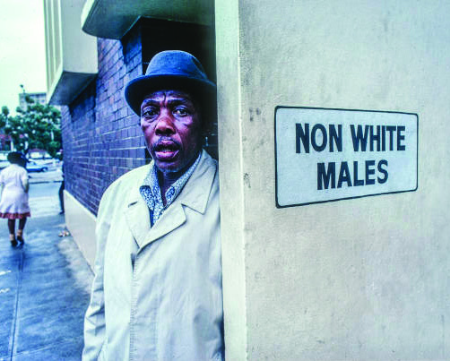

പാാസ്സ്് നിയമംം
(Native Pass Law Act)
കറുുത്ത വർഗക്കാാർക്ക് ഒരു സ്ഥലത്തുനിിന്ന്
മറ്റൊ�ൊരു
ു സ്ഥലത്തേ�ക്ക്് സഞ്ചരിിക്കാാൻ പ്രത്യേ�േക
അനുമതിിപത്രങ്ങൾ (Passes) ആവശ്യമാായിിരുന്നു.
ഗ്രൂപ്പ് ഏരിയ നിയമംം
(Group Areas and Segregation Act)
വംശത്തെ� അടിസ്ഥാാനമാാക്കി ആളുകളെ� പ്രത്യേ�േക
പ്രദേ�ശങ്ങളിിലേ�ക്ക്് മാാറ്റി. ഈ വ്യവസ്ഥ മഹാാവർ
ണ്ണവിവേചനം (Great Apartheid) എന്നറിിയപ്പെ�ട്ടു.
ജനസംഖ്യയ
രജിസ്ട്രേേğഷൻ നിയമംം
(Population Registration Act)
18 വയസ്സ്് കഴിിഞ്ഞ എല്ലാാവർക്കുംം� അവരുുടെെ
വംശത്തെ� വ്യക്തമാാ
ക്കുുന്ന തിിരിച്ചറിിയൽ കാാർഡ്
നിിർബന്ധമാാക്കി.
ബന്റു അധിികാാര നിയമംം
(Home Land System Bantu
Authorities Act)
കറുുത്തവർ പ്രത്യേ�േക സ്വവയംഭരണ പ്രദേ�ശങ്ങളിിലെ�
പൗൗരരാായിി മാാറുകയുംം� അവർക്ക് ദക്ഷിണാാഫ്രിി
ക്കൻ പൗൗരത്വംം� നഷ്ടപ്പെ�ടുുകയുംം� ചെ�യ്തുു.
പ്രത്യേ�േക സൗകര്യ
സംവരണ
നിയമംം
(Reservation of Separate Amenities Act)
മൈൈതാാനങ്ങൾ, ബീച്ചുകൾ, ബസ്സ്, ആശുപത്രി,
സ്കൂളുകൾ, പാാർക്ക് തുടങ്ങിിയ പൊ�ൊതുുഇടങ്ങളിിൽ
സൂചനാാഫ
ലകങ്ങൾ സ്ഥാാപിിച്ചു.
ബന്റു വിിദ്യാ�ാഭ്യാ�ാസ നിയമംം
(The Bantu Education Act)
കറുുത്ത വർഗക്കാാർക്ക് പരമ്പരാാഗത
രീീതിിയിിലുള്ള
വിദ്യാ�ാഭ്യാ�ാസത്തിിന് മാാത്രം അവകാാശംം നൽകി.
പ്രത്യേ�േക സൗൗകര്യ സംവരണ നിിയമവുുമാായിി ബന്ധപ്പെ�ട്ട്് ദക്ഷിണാാഫ്രിിക്കയിിൽ സ്ഥാാപിി
ക്കപ്പെ�ട്ടിിരുന്ന ചില മുുന്നറിിയിിപ്പ് ബോ�ോർഡുകൾ ശ്രദ്ധിക്കൂ.
വെള്ളക്കാാര
ല്ലാാത്ത പുരുഷന്മാാർക്കുു
മാാത്രം പ്രവേശനംം
യൂറോ�ോപ്യൻ കുട്ടികൾക്ക് മാാത്രമുുള്ള കളിിസ്ഥലം
175
വിിവേ�ചനത്തിിനെ�തിിരെെ
Page 64
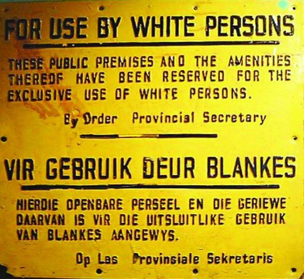
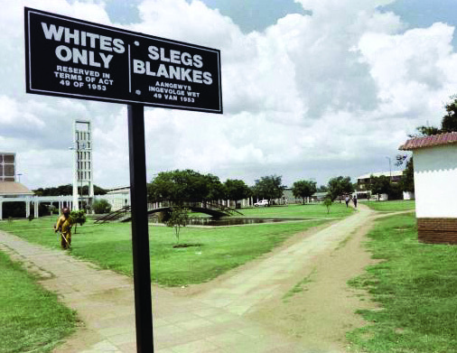
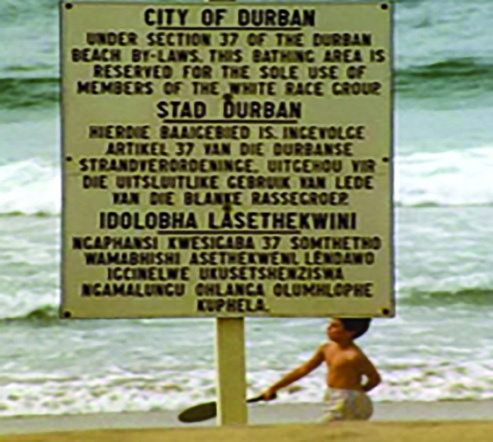

ചിത്രങ്ങൾ 11.11
വർണ്ണവിിവേ�ചനകാാ
ലത്തെ� മുന്നറിിയിപ്പ് ബോ�
ോർഡുകൾ
ഡർബൻ തീര നിിയമംം സെ�ക്ഷൻ 37 പ്രകാാരം
ഡർബൻ കടൽത്തീരം വെളുത്ത വർഗക്കാാർ മാാത്രമേ�
ഉപയോ�ോഗിക്കാാൻ പാാടുള്ളൂ.
ഈ പൊ�ൊതുുസ്ഥലവുംം� സൗൗകര്യങ്ങളും�
ം
വെളുത്ത വർഗക്കാാർക്കുുമാാത്രമാായിി
പരിിമിതപ്പെ�ടുുത്തിിയിിരിക്കുുന്നു.
മുുന്നറിിയിിപ്പ് : തദ്ദേŔശീയരെെ സൂക്ഷിക്കുുക
വെളുത്ത വർഗക്കാാർക്കുുമാാത്രം പ്രവേശനംം
കറുുത്ത വർഗക്കാാർ സ്വവന്തം നാാട്ടിൽ അനുഭവിിക്കേ�ണ്ടിവന്ന മനുുഷ്യാാ�വകാാശ ലംഘനങ്ങളുുടെെ
തീവ്രതയാാണ്
് ഈ മുുന്നറിിയിിപ്പ് ബോ�ോർഡുകൾ സൂചിപ്പിിക്കുുന്നത്.
ഇത്തരംം മനുുഷ്യയത്വരഹി
ിതമാായ
നിിയമങ്ങ
ൾ നടപ്പിിലാാക്കിയതോ�ോടെെ ദക്ഷിണാാഫ്രിിക്കയുുടെെ
ഉടമകളാായിിരുന്ന ജനങ്ങൾ വോോോട്ടവകാാശമിില്ലാാത്തവരും�ം ഭരണാാവകാാശവുംം� വിദ്യാ�ാഭ്യാ�ാസാാവ
കാാശവുംം� നിിഷേ�ധിിക്കപ്പെ�ട്ടവരുുമാായിിത്തീർന്നു.
വർണ്ണവിവേചന നിിയമങ്ങ
ൾമൂലം ജനങ്ങൾക്ക് നേ�രിിട്ട ബുദ്ധിമുുട്ടുകൾ
റോ�ോൾപ്ലേƃ ആയിി അവതരിിപ്പിിക്കുുക.
ദക്ഷിിണാാഫ്രിിക്കൻ സ്വാ�തന്ത്ര്യയസമരംം
കോsോളനിിവൽക്കരണവുംം� വർണ്ണവിവേചനവുംം� ദക്ഷിണാാഫ്രിിക്കയിിലെ� ജനജീീവിതത്തെ�
പ്രതിികൂലമാായിി ബാാധിച്ചു. ദക്ഷിണാാഫ്രിിക്കയിിലെ� കറുുത്ത വർഗക്കാാർ രാാഷ്ട്രീീയമാായുംം�
176
സാാമൂൂഹ്യയശാാസ്ത്രംം
- ഭാാഗംം 2
VII
Page 65

സാാമ്പത്തിികമാായുംം� സാംസ്്കാാരിികമാായുംം� തകർച്ച നേ�രിിട്ടു. ദേ�ശീീയ സമ്പദ്്വ്യവസ്ഥ ദ്രുത
ഗതിിയിിൽ വളർന്നെ�ങ്കിിലുംം� തദ്ദേŔശീയജനത അടിസ്ഥാാന
ആവശ്യങ്ങൾക്കുുപോ�ോലുംം� ബുദ്ധിമുുട്ടി.
ഇത്തരംം വിവേചനങ്ങൾക്കുംം� അടിച്ചമർത്തലുുകൾക്കുുമെെതിിരെെ ദക്ഷിണാാഫ്രിിക്കൻ ജനത
നടത്തിിയ ചില പ്രധാാന സമരങ്ങ
ൾ ഏതെ�ല്ലാാമെെന്ന്് നോ�ോക്കാം.
നെ�ൽസൺ മണ്ടേ�ലയുടെെ നേ�തൃത്വത്തിിൽ ആഫ്രിിക്കൻ നാാഷ
ണൽ കോsോൺഗ്രസ് കറുുത്ത
വർഗക്കാാരുുടെെ മോ�ോചനത്തിിനാായിി രാാജ്യവ്യാാ�പക പ്രക്ഷോ�ോഭങ്ങൾ ആരംഭിച്ചു. ആദ്യകാാല
പ്രക്ഷോ�ോഭങ്ങൾ തിികച്ചുംം� സമാാ
ധാാനപരമാായ
നിിയമലംംഘന സമരങ്ങളാാ
യിിരുന്നു.
ചിത്രംം 11.12
അടിച്ചമർത്തലുുകൾക്കെ�തിിരെെ ദക്ഷിണാാഫ്രിിക്കൻ ജനത നടത്തിിയ പ്രക്ഷോ�
ോഭം
ദക്ഷിണാാഫ്രിിക്കൻ ഇന്ത്യൻ കോsോൺഗ്രസിന്റേźയുംം� ആഫ്രിിക്കൻ നാാഷ
ണൽ കോsോൺഗ്രസിന്റെെź
യുംം� ആഹ്വാാ�നമനുസരിിച്ച് ഫാാക്ടറിിത്തൊ�ൊഴിിലാാളിികൾ, ഓഫീസ്് ജീവനക്കാാർ, അധ്യാ�ാപകർ,
വിദ്യാ�ാർഥികൾ തുടങ്ങിി വിവിധ വിഭാാഗം ജനങ്ങൾ സമരങ്ങ
ളിിൽ ഒത്തുചേ�ർന്നു. പാാസ്സ്
നിിയമങ്ങ
ൾ, നിിരോ�ോധനാാജ്ഞ എന്നിവയെ� ചോ�ോദ്യം�ം ചെ�യ്ത പ്രതിിഷേ�ധക്കാാരെെ
അറസ്റ്റ് ചെ�യ്ത്്
തടവിലാാക്കി.
1956-ൽ രാാജ്യദ്രോ�ോഹക്കുുറ്റം ചുമത്തിി നെ�ൽസൺ മണ്ടേ�ലയെ� വീണ്ടുംം� അറസ്റ്റ് ചെ�യ്തുു. നീണ്ട
കാാലത്തെ� വിചാാരണയ്ക്കുശേ�ഷംം അദ്ദേŔഹത്തെ� കുറ്റവിിമുുക്തനാാക്കി
ി.
ആഫ്രിിക്കൻ വർഷം
ആഫ്രിിക്കൻ രാാജ്യങ്ങളുുടെെ സ്വാാ�തന്ത്ര്യസമര
ചരിത്രത്തിിൽ വളരെെ പ്രാാധാാന്യമർഹിക്കുുന്ന
വർഷമാാണ്
് 1960. പതിിനേ�ഴ്് ആഫ്രിിക്കൻ രാാജ്യങ്ങൾ
ക്ക് സ്വാാ�തന്ത്ര്യംം� ലഭിച്ച ഈ വർഷത്തിിന് ദക്ഷിണാാ
ഫ്രിിക്കയുുടെെ ചരിത്രത്തിിലുംം� വളരെെ പ്രാാധാാന്യമുുണ്ട്്.
പാാസ്് നിിയമങ്ങ
ൾക്കെ�തിിരെെ ഷാാർപ്പ് വിൽ (Sharp
Velle) എന്ന സ്ഥലത്ത് സമരം
ം ചെ�യ്ത ആൾക്കാാരെെ
കൂട്ടക്കൊ�ൊല ചെ�യ്തതുംം� ദക്ഷിണാാ
ഫ്രിിക്കൻ ഗവൺമെെന്റിനെ�തിിരാായ സാായുുധകലാാപം ആരംഭിച്ചതുംം� 1960-ൽ ആണ്.
ചിത്രംം 11.13
177
വിിവേ�ചനത്തിിനെ�തിിരെെ
Page 66
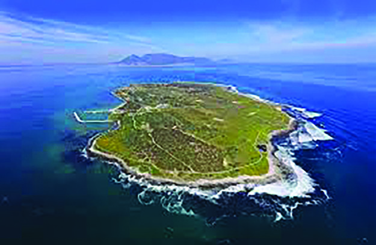
റോ�ോബൻ ദ്വീീ�പ്
ഇന്ത്യൻ സ്വാാ�തന്ത്ര്യസമര
ചരിത്രത്തിിൽ ആൻ
ഡമാാൻ ദ്വീീ�പിലെ� സെ�ല്ലുുലാാർ (കാാലാാപാാനിി)
ജയിിലിനുള്ള പ്രാാധാാന്യമാാണ് ദക്ഷിണാാ
ഫ്രിിക്കൻ ചരിത്രത്തിിൽ റോ�ോബൻ ദ്വീീ�പിനു
ള്ളത്. അറസ്റ്റിലാാകുന്ന ആഫ്രിിക്കൻ ജനനേ�താാക്കളെ�
നാാടുകടത്താാനാാ
യിി ഉപയോ�ോഗിച്ചിരുന്ന ദ്വീീ�പാാണിത്.
പതിിനെ�ട്ട്് വർഷം നെ�ൽസൺ മണ്ടേ�ല തടവിൽ കഴിി
ഞ്ഞത്് ഇവിടെെയാാണ്.
ചിത്രംം 11.14
വോോോട്ടവകാാശംം, വർണ്ണവിവേചനം ഇല്ലാാത്ത ഭരണഘടന, പാാസ്സ് നിിയമങ്ങ
ൾ പിൻവലിക്കൽ
എന്നീ ആവശ്യങ്ങൾ ഉന്നയിിച്ച് വീട്ടിലിരിപ്പ് (Stay-at-home) എന്ന പുതിിയ സമര
രീീതിി
സംഘടിപ്പിിക്കപ്പെ�ട്ടുു. ആഫ്രിിക്കൻ നാാഷ
ണൽ കോsോൺഗ്രസുംം� ദക്ഷിണാാഫ്രിിക്കൻ ഇന്ത്യൻ
കോsോൺഗ്രസുമാാണ് ഈ സമര
ത്തിിന് നേ�തൃത്വംം� നൽകിയത്്. തദ്ദേŔശീയരും�ം ഇന്ത്യക്കാാരു
ുമാായ
തൊ�ൊഴിിലാാളിികൾ ഈ സമര
ത്തിിൽ പങ്കെ�ടുുത്തു. രാാജ്യത്തെ� ഫാാക്ടറിികൾ, തുണിമില്ലുകൾ,
വിദ്യാ�ാലയങ്ങൾ ഇവയെ�ല്ലാം� അടഞ്ഞുു കിടന്നു. ഈ പണി
ിമുുടക്ക് വർണ്ണവിവേചന വിരുദ്ധ
പ്രസ്ഥാാന
ത്തിിന്റെെź ഐക്യവുംം� ശക്തിിയുംം� വെളിിപ്പെ�ടുുത്തിി. ദക്ഷിണാാഫ്രിിക്കൻ സ്വാാ�തന്ത്ര്യ
സമര
ചരിത്രത്തിിലെ� സുപ്രധാാന സമരമാാ
യിിരുന്നു വീട്ടിലിരിപ്പ് സമരം
ം.
സമാാ
ധാാനപരമാായ
സമരങ്ങ
ൾക്ക് ഫലംം കാാണാാത്തിിനെ�ത്തുുടർന്ന് നെ�ൽസൺ മണ്ടേ�ല
സാായുുധകലാാപങ്ങൾക്ക് ആഹ്വാാ�നം ചെ�യ്തുു.
1964-ൽ അട്ടിമറിി, രാാജ്യദ്രോ�ോഹം, ഗൂഢാാലോ�ോചന എന്നീ കുറ്റങ്ങളാാരോ�
ോപിച്ച് നെ�ൽസൺ
മണ്ടേ�ലയ്ക്ക്് ജീവപര്യയന്തം തടവ് വിധിച്ചു. റോ�ോബൻ ദ്വീീ�പിലുംം� പോ�ോൾസ്്മൂൂർ ജയിിലിലുമാായിി
തുടർച്ചയാായിി 26 വർഷം കഠിനമാായ
ജയിിൽ ശിക്ഷ അനുഭവിിക്കേ�ണ്ടിവന്നു. ലോ�ോകരാാഷ്ട്ര
ങ്ങൾ ദക്ഷിണാാഫ്രിിക്കക്കെ�
തിിരെെ ഉപരോ�ോധം ഏർപ്പെ�ടുുത്തിി. ഐക്യരാാഷ്ട്രസം
ംഘടന, ‘മനുുഷ്യയ
ത്വത്തിിനെ�തിിരെെയുുള്ള കുറ്റമാാണ്
് വർണ്ണ വിവേചനം’ എന്ന് പ്രമേ�യംം പാാസാാക്കിി. ഇതോ�ോടെെ
നാാട്ടിലാാകെെs കലാാപങ്ങൾ പടർന്നു. ജനങ്ങളുുടെെ പ്രതിിഷേ�ധംം അടിച്ചമർത്താാൻ ഗവൺമെെന്റ്
1984-ൽ അടിയന്തിരാാവസ്ഥ പ്രഖ്യാാ�പിച്ചു. തുടർന്നുണ്ടാായ
സംഘർഷങ്ങ
ളിിൽ ധാാരാാളംം
കറുുത്ത വർഗക്കാാർ കൊsൊല്ലപ്പെ�ട്ടുു.
പ്രക്ഷോ�ോഭങ്ങൾ അനിിയന്ത്രിതമാായപ്പോ�ോൾ വർണ്ണവിവേചനം നിിർത്തലാാക്കാാനു
ുളള നടപടിി
കൾ ആരംഭിച്ചു. രാാഷ്ട്രീീയത്തടവുകാാരെെ വിട്ടയയ്ക്കുകയുംം� രാാഷ്ട്രീീയപ്പാാർട്ടികൾക്കുുണ്ടാായിിരുന്ന
നിിരോ�ോധനംം നീക്കുുകയുംം� ചെ�യ്തുു. 1990 ഫെ�ബ്രുുവരിി 11-ന് നെ�ൽസൺ മണ്ടേ�ല ജയിിൽമോ�ോ
ചിതനാായിി.
1991-ൽ വർണ്ണവിവേചനനയംം പിൻവലിക്കപ്പെ�ട്ടുു. 1994-ൽ നടന്ന ആദ്യത്തെ� ജനകീീയ
തിിരഞ്ഞെ�ടുുപ്പിിൽ ആഫ്രിിക്കൻ നാാഷ
ണൽ കോsോൺഗ്രസ് ഭൂൂരിപക്ഷംം നേ�ടുുകയുംം� നെ�ൽസൺ
മണ്ടേ�ല സ്വവതന്ത്ര്ര ജനാാധിപത്യ ദക്ഷിണാാഫ്രിിക്കയുുടെെ ആദ്യത്തെ� കറുുത്ത വർഗക്കാാരനാായ
പ്രസിഡന്റാായിി തിിരഞ്ഞെ�ടുുക്കപ്പെ�ടുുകയുംം� ചെ�യ്തുു.
178
സാാമൂൂഹ്യയശാാസ്ത്രംം
- ഭാാഗംം 2
VII
Page 67


ദക്ഷിണാാഫ്രിിക്കയുുടെെ സ്വാാ�തന്ത്ര്യസമരവു
ുമാായിി ബന്ധപ്പെ�ട്ട ആശയങ്ങ
ൾ ഉൾ
പ്പെ�ടുുത്തിി ചോ�ോദ്യങ്ങൾ തയ്യാാറാാക്കി ചോ�ോദ്യോ�ോ�ത്തരപ്പയറ്റ്് സംഘടിപ്പിിക്കുുക.
പ്രസിിഡന്റാായി സ്ഥാാനമേ�റ്റ
നെ�ൽസൺ മണ്ടേ�ല നടത്തിിയ പ്രസംഗം
ഞങ്ങൾ, ദക്ഷിണാാഫ്രിിക്കയിിലെ� ജനങ്ങൾ, നമ്മുടെെ രാാജ്യത്തിി
നുംം� ലോ�ോകത്തിിനുംം� അറിിയാാൻ പ്രഖ്യാാ�പിക്കുുന്നു: ദക്ഷിണാാ
ഫ്രിിക്ക, ഈ രാാജ്യത്ത് വസിിക്കുുന്ന കറുുപ്പുംം� വെളുപ്പുമുുള്ള
എല്ലാാവർക്കുംം� അവകാാശപ്പെ�ട്ടതാാണ്. ഇവിടെെ ജനങ്ങളുുടെെ
ഇച്ഛയെ� അടിസ്ഥാാനമാാക്കിയുള്ളതല്ലാാതെ� ഒരു ഗവൺമെെന്റിനുംം�
ന്യാാ�യമാായിി അധികാാരം അവകാാശപ്പെ�ടാാനാാവില്ല.
1994-ലെ� സ്വാാ�തന്ത്ര്യ ചാാർട്ടറിിന്റെെź പ്രാാരംംഭ വാാക്കുുകൾ.
ഈ പ്രസംഗത്തിിലൂടെെ ആഫ്രിിക്കക്കാാർ ഒറ്റജനതയാാ
യിി നിിൽക്കേ�ണ്ടതിിന്റെെź പ്രാാധാാന്യംം�
നെ�ൽസൺ മണ്ടേ�ല ഓർമ്മിപ്പിിച്ചു.
ഒരേ� പ്രദേ�ശത്ത്്, വ്യത്യസ്ത വംശങ്ങൾ ഒരുമിച്ചുജീവിക്കുുന്ന വർത്തമാാനകാാ
ലത്ത്, നെ�ൽസൺ
മണ്ടേ�ല ഉയർത്തിിപ്പിിടിച്ച സഹവർത്തിിത്വ നിിലപാാട് ലോ�ോകരാാഷ്ട്രങ്ങൾക്കെ�ല്ലാം� മാാതൃകയാാണ്.
തുടർപ്രവർത്തനങ്ങൾ
l ദക്ഷിണാാഫ്രിിക്കയിിൽ വെളുത്ത വർഗക്കാാർ നടപ്പിിലാാക്കിയ കോsോളനിിവൽക്കരണവുംം�
വർണ്ണവിവേചനവുംം� കറുുത്ത വർഗക്കാാരുുടെെ ജീവിതം എത്രത്തോ�ോളം ദുുസ്സഹമാാക്കിയെ�ന്ന്്
നിിങ്ങൾ കണ്ടല്ലോ�ോ. വിവേചനത്തിിന്റെെź വേരറുുക്കാാൻ അവർ നടത്തിിയ പോ�ോരാാട്ടങ്ങൾ
നാാടകരൂൂപത്തിിൽ അവതരിിപ്പിിക്കുുക.
l
ദക്ഷിിണാാഫ്രിിക്കയുുടെെ വർണ്ണവിവേചന വിരുദ്ധ സമരങ്ങളു
ുടെെ സംഭവബഹുലമാായ
നാാൾവഴിികൾ ഉൾപ്പെ�ടുുത്തിി ഒരു ടൈംം� ലൈൈൻ (Time Line) തയ്യാാറാാക്കുുക.
179
വിിവേ�ചനത്തിിനെ�തിിരെെ